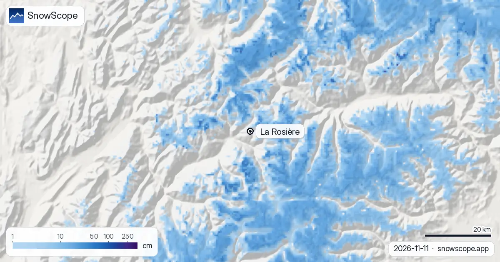

La Rosière snow conditions: 24 cm at the top, 108 cm forecast this week (12 November 2026)
La Rosière faces south over the Tarentaise, on the French side of the Petit-Saint-Bernard pass, and shares its ski area with La Thuile in Italy. On the 11 November model run the top at 2799 m holds 24 cm, mid-mountain at 1995 m and the village at 1192 m are bare, and the next seven days are forecast to drop 108 cm at the top, 61 cm at mid-mountain and 4 cm in the village.
See the live snow forecast for La Rosière in the SnowScope appSnow depth, powder alerts and the 3D map, free.
Conditions on 11 November
The top gained 23 cm over the last seven days, 7 cm of it in the last 48 hours and 2 cm in the last day, and keeps 24 cm. Mid-mountain received 9 cm in the week but shows 0 cm today: the sunny aspect that makes La Rosière pleasant in January eats thin November snow. The village had nothing.
Model values for the area, not a resort measurement; on this slope the difference between a north-facing gully and the open piste can be the whole number.
The coming week
The forecast is large: 17 cm at the top in the next 24 hours, 20 cm within 48 hours, 108 cm within seven days; 61 cm at mid-mountain; 4 cm in the village. The Italian side at La Thuile, over the pass, usually catches the same systems.
A seven-day total is the least certain number in this report: the first two days are the part to plan on, the rest is a direction.
What La Rosière usually has now
In the middle of our 46 past winters (1980-81 to 2025-26) the first snow lies at the top by 28 September, at mid-mountain by 12 October and in the village by 22 October. A usual November holds 11 cm in the village, 21 cm at mid-mountain and 51 cm at the top, so today's cover is behind at every height and the forecast would put it ahead.
December usually brings 41, 64 and 119 cm; the deepest months are February in the village (94 cm) and March and April higher up (153 cm at mid-mountain, 246 cm at the top).

A reliable village base
For a south-facing resort, La Rosière's village keeps snow well: 7 weeks of the winter have 50 cm or more in the village in 9 of 10 winters, and in week 9 (late February) every past winter had 50 cm or more there, with a middle depth of 101 cm. The peak of a middle winter is 117 cm in the village, 182 cm at mid-mountain and 306 cm at the top; last winter reached 140, 203 and 295 cm.
The mapped area has 68 km of runs and 29 lifts between 1192 m and 2799 m, the Italian side included.
Tips for skiers
- Plan on the first 48 hours of the forecast (20 cm at the top); treat the 108 cm as a possibility, not a total.
- The lifts and the link to La Thuile open on the resort's calendar, not on our map.
- A metre of new snow in a week means serious avalanche danger: read the Météo-France bulletin before any off-piste run.
More maps (external sites)
References and credits
- La Rosière, official site (lifts, opening dates, link to La Thuile) www.larosiere.net/
- Météo-France, mountain weather and avalanche bulletins meteofrance.com/meteo-montagne
About these numbers
Snow numbers: the SnowScope snow model, run of 11 November 2026, at three heights of the resort (model values for the area, not a resort measurement), and our snow history, 46 past winters (1980-81 to 2025-26), a model of the past corrected for height. Run length and lift count: OpenSkiMap mapping. Forecasts change: look at the map before you go.
Official avalanche bulletins: Météo-France – Bulletin d'estimation du risque d'avalanche
Cite this report
For research, teaching or the press: the numbers and charts are free to reuse under CC BY 4.0 with this citation.
SnowScope (2026), La Rosière snow conditions: 24 cm at the top, 108 cm forecast this week (12 November 2026), https://snowscope.app/blog/en/2026/11/la-rosiere-snow-conditions-12-november-2026.html, accessed 2026-11-12
SnowScope (Atlas Labs). (2026, November 12). La Rosière snow conditions: 24 cm at the top, 108 cm forecast this week (12 November 2026). SnowScope snow reports. https://snowscope.app/blog/en/2026/11/la-rosiere-snow-conditions-12-november-2026.html
BibTeX
@misc{snowscope2026larosieresnowconditions1,
author = {{SnowScope (Atlas Labs)}},
title = {La Rosière snow conditions: 24 cm at the top, 108 cm forecast this week (12 November 2026)},
year = {2026},
month = nov,
howpublished = {\url{https://snowscope.app/blog/en/2026/11/la-rosiere-snow-conditions-12-november-2026.html}},
note = {Published 2026-11-12 09:53 UTC; accessed 2026-11-12}
}· CC BY 4.0 · Methods, data and tools →
La Rosière: snow and temperature by height, this winter vs last (tools) →
Follow La Rosière
Free: a message when fresh snow is coming, and the forecast every morning.
More snow reports

Artesina got 44 cm of new snow in the last 72 hours. It now has about 20 cm on its upper slopes, according to our snow model.

More snow is on the way: by 10 November our forecast gives 36 cm at Orcières Merlette, 33 cm at Les Deux Alpes and 32 cm at La Grave. Keep in mind: …

A fresh round of snow has reshaped the picture in the Alps, though not every resort shared in it. Fresh snow at La Grave: 61 cm in the last 72 hours, …